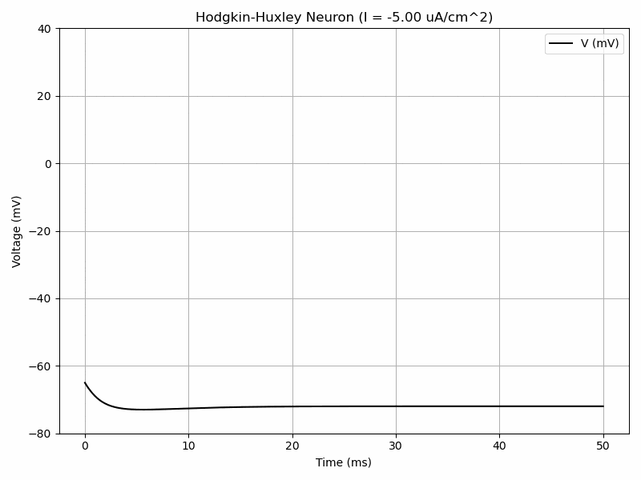
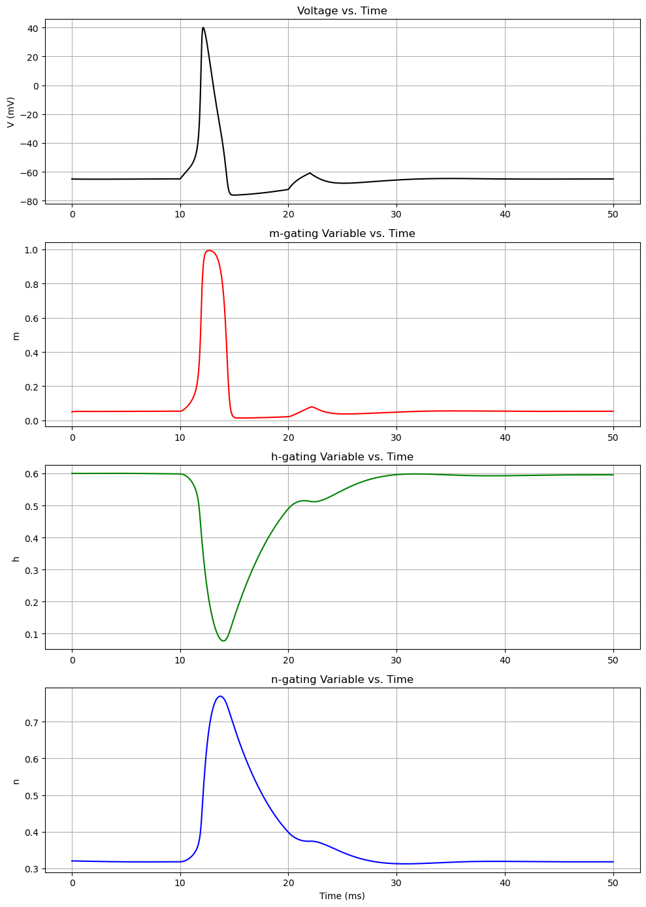
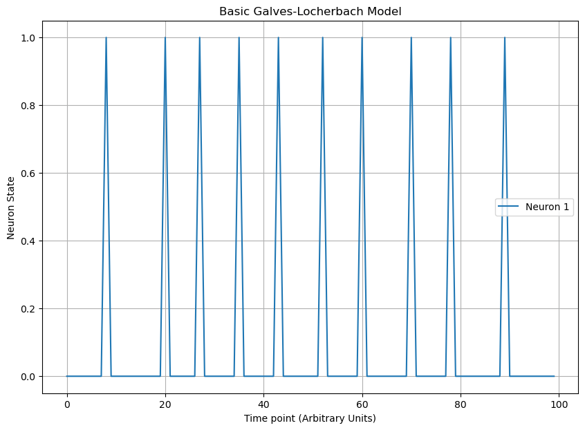

Since electromagnetism is the basis for chemistry, it is relevant for biochemistry.
Electrochemistry is particularly relevant for the following areas of biology:
Cell membranes, ion channels
Photosynthesis
Electron transport chain
Redox signalling
Energy storage
Contents
This chapter will introduce the basic units and concepts of electrostatics.
The basics of electrochemistry, such as half-reactions and the Nernst equation will be covered.
Finally, more advanced models will be introduced.
Basic Electrochemistry
Voltage, Current, and Electric Field
Electric Field
Charged objects exert an electric field, which in turn applies a force to other charged objects.
The force felt by the charged object is proportional to its charge, similar to how an object in a gravitational field feels a force proportional to its mass.
Electric Potential
In the analogy to gravity, electric potential would be the gravitational potential energy. One difference from gravity is that we observe positive and negative charges, while we only observe positive values for mass.
Positive charges seek lower/more negative electric potential while negative charges seek more positive potential.
Voltage
Voltage is the difference in electric potential between two points. It shares the same units as electric potential.
Current
Current is the movement of charged particles. In electricity, this is electrons. In biological systems, this is often ions, both positive and negative.
Current is measured in terms of charge per unit time.
Current direction is defined in terms of where positive charges are moving, or the opposite direction of negative charge movement.
This is mainly for historical reasons, but is important to know for the mathematics.
Oxidation and Reduction
Oxidation is the process in which a species loses electrons. It is associated with an increase in oxidation state or a loss of negative charge.
Reduction is the process in which a species gains electrons. It is associated with a decrease in oxidation state or a gain of negative charge.
The two mnemonics that are popular are:
OIL RIG - Oxidation Is Loss (of electrons); Reduction Is Gain (of electrons)
LEO GIR - Loss of Electrons is Oxidation; Gain Is Reduction
Half-Reactions
In electrochemistry, it is common to split a chemical reaction into two half-reactions.
These half-reactions will have electrons as either a reactant (reduction) or product (oxidation) with an associated voltage for the half-reaction.
An example oxidation half-reaction is:
$$\text{Ni}_{(s)}\rightarrow \text{Ni}_{(aq)}^{2+}+2e^-$$
with an associated potential \(E^0:+0.23V\)
An example of a reduction half-reaction is:
$$\text{Co}^{3+}+e^{-}\rightarrow \text{Co}^{2+}$$
with an associated potential \(E^0:+1.82V\)
When pairing an oxidation half-reaction with a reduction half-reaction, you must multiply the equations such that the number of electrons cancel out.
If we used the above 2 reactions as an example:
$$\text{Ni}_{(s)}\rightarrow \text{Ni}_{(aq)}^{2+}+2e^-$$
$$\text{Co}^{3+}+e^{-}\rightarrow \text{Co}^{2+}$$
The second reaction would have to be multiplied by 2:
$$2\text{Co}^{3+}+2e^{-}\rightarrow 2\text{Co}^{2+}$$
An Aside on the Scaling of Electric potential
When we multiply the coefficients by a (non-zero) C for a reaction, we have the following properties:
\(K_{eq}\rightarrow (K_{eq})^c\)
\(\Delta G^0 \rightarrow c\times \Delta G^0\)
But what about for standard electric potential?
It only changes based on the sign of C. If C is negative, then the standard electric potential switches signs.
This allows us to turn an oxidation half-reaction into a reduction half-reaction and visa versa.
The magnitude of C does not affect the standard potential.
This may be surprising, but voltage is a measure of energy per charge.
If you multiply the coefficients by 2, the amount of energy produced doubles, but so does the number of electrons transferred.
HOWEVER, when you are combing two oxidation half reactions to make a third oxidation half-reaction (and similarly for reduction), the rule is not so simple.
The electric potential now becomes the average of the standard potentials, weighted by the number of electrons.
A good explanation of Hess' Law with respect to potentials
Returning to the Example
Thus, the half-reaction
$$2\text{Co}^{3+}+2e^{-}\rightarrow 2\text{Co}^{2+}$$
has a standard potential of \(E^0:+1.82V\).
When combining the two half-reactions, the standard potential is simply the sum of the two potentials.
$$2\text{Co}^{3+}+\text{Ni}_{(s)}\rightarrow 2\text{Co}^{2+}+\text{Ni}^{2+}_{(aq)}$$
Has a standard potential of 1.82V+0.23V=2.05V
Biological Standard Reduction Potentials
Given that standard reduction potentials assume 1M concentrations, biologists instead use a modification that takes into account a more realistic pH for biological systems.
This adjustment is made by reducing the standard reduction potential by 0.413V.
The effect of concentration deviations can be given by the Nernst Equation.
Nernst Equation
Similar to how Gibbs free energy can be related to the equilibrium constant,
electric potential can be related to both.
$$\Delta G^0 = -nFE^0$$
where G is Gibbs free energy, n is the moles of electrons transferred, F is Faraday's constant, and E is the potential.
Faraday's constant is the amount of charge per mole of electron. Since electric potential is like energy per charge, multiplying the two yields the amount of energy change.
$$E^0=\frac{RT}{nF}\ln K$$
The Nernst Equation is the relationship between standard reduction potential and the actual reduction potential due to the effects of concentration.
$$E=E^0-\frac{RT}{nF}\ln(Q)$$
Goldman Equation
The Goldman Equation further improves upon the Nernst equaiton by allowing for multiple ion species and their permeabilities.
$$V_{m}=\frac{RT}{F}\ln\left(\frac{\sum P_{M_i^+}[M_i^+]_{\text{out}}+\sum_{j}P_{A_j^-}[A_j^-]_{\text{in}}}{\sum P_{M_i^+}[M_i^+]_{\text{in}}+\sum_{j}P_{A_j^-}[A_j^-]_{\text{out}}}\right)$$
Circuit Models and Differential Equations
Neuron Models
Hodgkin-Huxley Model
The Hodgkin-Huxley model has a system of 4 differential equations in order to model voltage-gated ion channels.
$$I=C_m\frac{dV_m}{dt}+\bar{g}_Kn^4(V_m-V_K)+\bar{g}_{Na}m^3h(V_M-V_{Na})+\bar{g}_l(V_m-V_l)$$
$$\frac{dn}{dt}=\alpha_n(V_m)(1-n)-\beta_n(V_m)n$$
$$\frac{dm}{dt}=\alpha_m(V_m)(1-m)-\beta_m(V_m)m$$
$$\frac{dh}{dt}=\alpha_h(V_m)(1-h)-\beta_h(V_m)h$$
where alpha and beta are functions.

Hodgkin-Huxley Model with Varying Current
import numpy as np
from scipy.integrate import odeint
import matplotlib.pyplot as plt
from matplotlib.animation import FuncAnimation
%matplotlib notebook
# Constants
Cm = 1.0 # membrane capacitance (uF/cm^2)
gNa = 120.0 # maximum sodium conductance (mS/cm^2)
gK = 36.0 # maximum potassium conductance (mS/cm^2)
gL = 0.3 # maximum leak conductance (mS/cm^2)
ENa = 50.0 # sodium reversal potential (mV)
EK = -77.0 # potassium reversal potential (mV)
EL = -54.387 # leak reversal potential (mV)
# Equations for gating variables
def alpha_m(V):
return 0.1 * (V + 40.0) / (1.0 - np.exp(-(V + 40.0) / 10.0))
def beta_m(V):
return 4.0 * np.exp(-(V + 65.0) / 18.0)
def alpha_h(V):
return 0.07 * np.exp(-(V + 65.0) / 20.0)
def beta_h(V):
return 1.0 / (1.0 + np.exp(-(V + 35.0) / 10.0))
def alpha_n(V):
return 0.01 * (V + 55.0) / (1.0 - np.exp(-(V + 55.0) / 10.0))
def beta_n(V):
return 0.125 * np.exp(-(V + 65) / 80.0)
# Hodgkin-Huxley ODEs
def hodgkin_huxley(y, t, I):
V, m, h, n = y
dVdt = (I - gNa * m**3 * h * (V - ENa) - gK * n**4 * (V - EK) - gL * (V - EL)) / Cm
dmdt = alpha_m(V) * (1.0 - m) - beta_m(V) * m
dhdt = alpha_h(V) * (1.0 - h) - beta_h(V) * h
dndt = alpha_n(V) * (1.0 - n) - beta_n(V) * n
return [dVdt, dmdt, dhdt, dndt]
# Time span
t = np.linspace(0, 50, 1000)
y0 = [-65, 0.05, 0.6, 0.32]
# Set up the figure and axis for the animation
fig, ax = plt.subplots(figsize=(8, 6))
ax.set_title('Hodgkin-Huxley Neuron')
ax.set_xlabel('Time (ms)')
ax.set_ylabel('Voltage (mV)')
ax.grid(True)
line, = ax.plot(t, np.zeros_like(t), 'k', label='V (mV)')
ax.set_ylim([-80,40])
ax.legend()
# Initialization function
def init():
line.set_ydata(np.zeros_like(t))
return line,
# Update function for the animation
def update(frame):
I = frame # Current is directly set by the frame number
sol = odeint(hodgkin_huxley, y0, t, args=(I,))
line.set_ydata(sol[:, 0])
#ax.set_ylim(min(sol[:, 0]) - 10, max(sol[:, 0]) + 10)
ax.set_ylim([-80,40])
ax.set_title(f'Hodgkin-Huxley Neuron (I = {I:.2f} uA/cm^2)')
return line,
# Create the animation object
ani = FuncAnimation(fig, update, frames=np.linspace(-5, 15, 75),interval=50, init_func=init, blit=True)
plt.tight_layout()
plt.show()
ani.save('Hodgkin-Huxley.gif', fps=10,
#extra_args=['-vcodec', 'libx264']
)

Hodgkin-Huxley Model Variables over Time
import numpy as np
from scipy.integrate import odeint
import matplotlib.pyplot as plt
# Constants
Cm = 1.0 # membrane capacitance (uF/cm^2)
gNa = 120.0 # maximum sodium conductance (mS/cm^2)
gK = 36.0 # maximum potassium conductance (mS/cm^2)
gL = 0.3 # maximum leak conductance (mS/cm^2)
ENa = 50.0 # sodium reversal potential (mV)
EK = -77.0 # potassium reversal potential (mV)
EL = -54.387 # leak reversal potential (mV)
# Equations for gating variables
def alpha_m(V):
return 0.1 * (V + 40.0) / (1.0 - np.exp(-(V + 40.0) / 10.0))
def beta_m(V):
return 4.0 * np.exp(-(V + 65.0) / 18.0)
def alpha_h(V):
return 0.07 * np.exp(-(V + 65.0) / 20.0)
def beta_h(V):
return 1.0 / (1.0 + np.exp(-(V + 35.0) / 10.0))
def alpha_n(V):
return 0.01 * (V + 55.0) / (1.0 - np.exp(-(V + 55.0) / 10.0))
def beta_n(V):
return 0.125 * np.exp(-(V + 65) / 80.0)
def external_current(t):
""" A time-varying external current """
'''
The neuron receives two short current pulses,
one between 10ms and 12ms, and another between 20ms and 22ms.
'''
if 10 <= t <= 12:
return 10.0 # current pulse
elif 20 <= t <= 22:
return 10.0 # another current pulse
return 0.0
# Hodgkin-Huxley ODEs
def hodgkin_huxley(y, t):
'''
n = potassium subunit activation
m = sodium subunit activation
h = sodium channel subunit inactivation
'''
V, m, h, n = y
dVdt = (external_current(t) - gNa * m**3 * h * (V - ENa) - gK * n**4 * (V - EK) - gL * (V - EL)) / Cm
dmdt = alpha_m(V) * (1.0 - m) - beta_m(V) * m
dhdt = alpha_h(V) * (1.0 - h) - beta_h(V) * h
dndt = alpha_n(V) * (1.0 - n) - beta_n(V) * n
return [dVdt, dmdt, dhdt, dndt]
# Time span
t = np.linspace(0, 50, 10000) # time span and steps (ms)
y0 = [-65, 0.05, 0.6, 0.32] # initial condition [V, m, h, n]
# Solve ODE
sol = odeint(hodgkin_huxley, y0, t)
# Plot
fig, axs = plt.subplots(4, 1, figsize=(10, 14))
# Voltage
axs[0].plot(t, sol[:, 0], 'k')
axs[0].set_title('Voltage vs. Time')
axs[0].set_ylabel('V (mV)')
axs[0].grid(True)
# m-gating variable
axs[1].plot(t, sol[:, 1], 'r')
axs[1].set_title('m-gating Variable vs. Time')
axs[1].set_ylabel('m')
axs[1].grid(True)
# h-gating variable
axs[2].plot(t, sol[:, 2], 'g')
axs[2].set_title('h-gating Variable vs. Time')
axs[2].set_ylabel('h')
axs[2].grid(True)
# n-gating variable
axs[3].plot(t, sol[:, 3], 'b')
axs[3].set_title('n-gating Variable vs. Time')
axs[3].set_xlabel('Time (ms)')
axs[3].set_ylabel('n')
axs[3].grid(True)
plt.tight_layout()
plt.show()
Galves-Locherbach model
The Galves-Locherbach model (GL model) is a mathematical model designed to represent networks of neurons, encompassing intrinsic stochasticity. It is part of a broader class of non-Markovian processes with a countable number of interacting components in both discrete and continuous time.
Stochastic Chains with Memory
In the Markov chains, the only information in the filtration that you needed to condition on was the present state.
In a stochastic chain with memory, you can condition on other things, such as time since a given event.
Basics
In a basic Galves-Locherbach model, a neuron is either firing or not and is influenced by the states of other neurons in the network. Each neuron only remembers the past as far back as the last time it fired.
The probability that a neuron fires at a given time point is a function taking values on [0,1] that monotonically increases with respect to the time since last fired.
The figure below uses a sigmoidal probability model centered at L=5. By modifying the probability function, you can change the dynamics, such as adding a refractory period.

Galves-Locherbach Example
import random
import math
def phi(x):
return 1 / (1 + math.exp(-x/2+5))
def gl_model(length):
"""
Simulate the Galves-Locherbach model for a given length.
"""
sequence = []
context = 0
for _ in range(length):
if (random.random() < phi(context)):
sequence.append(1)
context = 0
else:
sequence.append(0)
context += 1
return sequence
np.random.seed(1)
print(gl_model(100))
plt.figure(figsize=(10, 7))
plt.title('Basic Galves-Locherbach Model')
plt.plot(range(len(sequence)),sequence, 'tab:blue', label='Neuron 1')
plt.legend()
plt.xlabel('Time point (Arbitrary Units)')
plt.ylabel('Neuron State')
plt.grid(True)
plt.show()
Electrochemistry Exercises
Define half-reaction and describe its role in balancing redox reactions.
How does a change in concentration of reactants or products affect the cell potential according to the Nernst equation?
How does the standard Gibbs free energy change relate to the standard cell potential?
How does the stoichiometry of a redox reaction affect the terms in the Nernst equation?
Calculate the Nernst potential for \(K^+\) ions at 37 °C when the inside concentration is 140 mM and the outside concentration is 5 mM.
Use the Nernst Equation to calculate the equilibrium potential for \([Na^+]_i=10 mM\) and \([Na^+]_o=145mM\).
If the temperature is increased, how will the Nernst potential change, assuming constant ion concentrations?
Can the Nernst potential for an ion be zero? If yes, under what conditions?